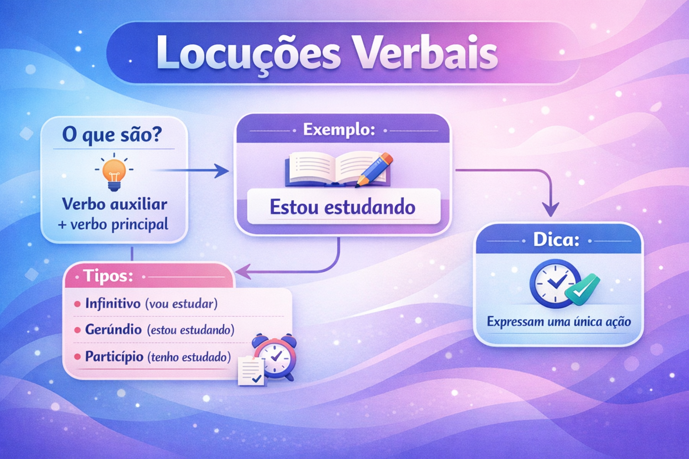

Locuções verbais: o que são, tipos, exemplos e como identificar
As locuções verbais são combinações de dois ou mais verbos que funcionam como uma unidade verbal. Em construções como “está estudando”, “tinha terminado” e “vai viajar”, os verbos se articulam para apresentar uma situação e acrescentar informações sobre seu tempo, desenvolvimento ou possibilidade.
Seu estudo ajuda a compreender a organização das orações, a concordância, os tempos compostos e a voz passiva. Também permite interpretar diferenças importantes entre enunciados como “ele trabalha”, “ele está trabalhando” e “ele deve trabalhar”.
Neste guia, você aprenderá a identificar auxiliares e verbos principais, analisar as formas nominais, distinguir construções semelhantes e resolver um quiz com gabarito comentado.

O que é uma locução verbal?
Na abordagem escolar, chama-se locução verbal a combinação de um ou mais verbos auxiliares com um verbo principal, empregado em uma forma nominal: infinitivo, gerúndio ou particípio.
O verbo principal fornece o conteúdo lexical central: estudar, escrever, dormir, existir, permanecer. Os auxiliares participam da construção de informações gramaticais e de sentidos como continuidade, anterioridade, obrigação e possibilidade.
Exemplo: Os estudantes estavam revisando o conteúdo.
- estavam: auxiliar flexionado no pretérito imperfeito do indicativo, na terceira pessoa do plural;
- revisando: verbo principal no gerúndio;
- estavam revisando: unidade verbal que apresenta a revisão em andamento em um momento passado.
A expressão “uma única ação” é uma simplificação. Verbos também podem expressar estados, processos e fenômenos. O critério central é a formação de uma unidade verbal, e não a presença obrigatória de uma ação praticada por alguém.
Verbo auxiliar e verbo principal: qual é a diferença?
| Elemento | Papel na construção | Exemplo |
|---|---|---|
| Verbo auxiliar | Participa da expressão de tempo, modo, pessoa, número, aspecto, modalidade ou voz. | Em “estamos lendo”, o auxiliar é “estamos”. |
| Verbo principal | Fornece o conteúdo lexical central e aparece em uma forma nominal. | Em “estamos lendo”, o principal é “lendo”. |
Na construção “Nós tínhamos resolvido a questão”, tínhamos situa o conjunto em relação a um momento passado; resolvido identifica o processo realizado. A interpretação resulta da combinação dos dois.
Um verbo é sempre auxiliar?
Não. A classificação depende do emprego na oração. Um mesmo verbo pode funcionar como auxiliar em determinado contexto e apresentar sentido lexical próprio em outro.
Verbo com sentido lexical próprio
Eu tenho dois livros.
“Tenho” expressa posse e não auxilia outro verbo.
Verbo auxiliar
Eu tenho lido bastante.
“Tenho” participa da formação de um tempo composto de “ler”.
- Ela vai à biblioteca. — “Ir” expressa deslocamento.
- Ela vai pesquisar o assunto. — Na leitura de futuro, “ir” funciona como auxiliar.
- O professor está tranquilo. — “Estar” liga o sujeito ao predicativo.
- O professor está explicando a regra. — “Estar” auxilia a construção progressiva.
Por isso, memorizar uma lista de auxiliares não substitui a análise do funcionamento de cada verbo no contexto.
Quais são os tipos de locuções verbais?
Uma forma didática de organizar as locuções é observar a forma nominal do verbo principal. Essa classificação descreve a estrutura, mas não esgota seus sentidos.
1. Locuções com infinitivo
O infinitivo apresenta formas como estudar, escrever, partir. Nas construções com auxiliares, pode participar da expressão de futuro, possibilidade, obrigação e diferentes fases de um processo.
| Exemplo | Construção | Valor no contexto |
|---|---|---|
| Amanhã, vou revisar o texto. | Ir + infinitivo | Futuro ou intenção |
| Com autorização, você pode entrar. | Poder + infinitivo | Permissão |
| Você deve respeitar o prazo. | Dever + infinitivo | Obrigação |
| A turma começou a escrever. | Começar a + infinitivo | Início do processo |
| Ele deixou de reclamar. | Deixar de + infinitivo | Cessação do processo |
| A pesquisadora voltou a escrever. | Voltar a + infinitivo | Retomada ou repetição |
Locuções com infinitivo não expressam apenas futuro. Em “começou a chover”, o conjunto está no passado e destaca o início do fenômeno.
2. Locuções com gerúndio
O gerúndio apresenta formas como estudando, escrevendo, partindo. Em locuções, pode contribuir para apresentar um processo em desenvolvimento, sua continuidade ou sua progressão.
- A aluna está lendo. — Leitura em andamento.
- A aluna estava lendo quando cheguei. — Leitura em andamento em um momento passado.
- A aluna continua lendo. — Permanência do processo.
- A equipe vem pesquisando o assunto. — Processo desenvolvido desde um período anterior até o momento de referência.
- Aos poucos, os estudantes foram compreendendo a explicação. — Desenvolvimento gradual.
Observe que a presença do gerúndio não determina o tempo da locução. A flexão do auxiliar e o contexto ajudam a situar o processo.
3. Locuções com particípio
O particípio aparece em formas como estudado, escrito, feito, aberto. É empregado na formação dos tempos compostos e da voz passiva analítica, entre outras construções.
- Nós tínhamos concluído a pesquisa. — Tempo composto.
- A equipe havia enviado os resultados. — Tempo composto.
- As questões foram corrigidas pela professora. — Voz passiva analítica.
- O documento será assinado amanhã. — Voz passiva com referência futura.
Não é adequado afirmar que toda locução com particípio expressa um fato concluído no passado. Em “será assinado amanhã”, o evento é futuro; em “tem estudado ultimamente”, há leitura de repetição ou continuidade em um intervalo que alcança o presente.
Tempo, aspecto, modalidade e voz: o que as locuções expressam?
Identificar uma locução envolve reconhecer sua estrutura e interpretar a contribuição de cada elemento. Quatro dimensões ajudam nessa análise.
Tempo: quando a situação é localizada?
O tempo estabelece relações entre a situação descrita e um momento de referência. Em “vai estudar amanhã”, a situação é projetada para depois do momento da fala. Em “tinha estudado antes da aula”, o estudo é anterior a outro momento passado.
Aspecto: como o processo é apresentado?
O aspecto focaliza o desenvolvimento interno da situação: início, continuidade, repetição, progressão ou término. Compare:
- começou a ler: destaca o início;
- está lendo: destaca o processo em andamento;
- continua lendo: destaca a continuidade;
- voltou a ler: destaca a retomada;
- acabou de ler: pode destacar a conclusão recente, conforme o contexto.
Modalidade: que avaliação acompanha a situação?
A modalidade permite expressar, por exemplo, obrigação, possibilidade, capacidade ou permissão. O sentido depende do contexto.
Obrigação
Como responsável pelo atendimento, ela deve chegar às oito.
O enunciado apresenta uma exigência.
Probabilidade
Ela já saiu de casa e deve chegar em poucos minutos.
O enunciado apresenta uma expectativa fundamentada na situação.
A mesma sequência verbal pode, portanto, produzir leituras diferentes. Classificar dever sempre como obrigação prejudica a interpretação.
Voz: como os participantes são organizados?
Na voz passiva analítica, o sujeito é apresentado como paciente do processo: “Os textos foram revisados pela equipe”. A construção reorganiza o enunciado em relação à voz ativa: “A equipe revisou os textos”.
Locução verbal e tempo composto são a mesma coisa?
Locução verbal é uma categoria mais ampla. Na terminologia escolar, os tempos compostos são construídos com os auxiliares ter ou haver e o particípio do verbo principal.
| Construção | Classificação | Explicação |
|---|---|---|
| Estava lendo | Locução progressiva | Apresenta a leitura em andamento no passado. |
| Tinha lido | Tempo composto | Pretérito mais-que-perfeito composto do indicativo. |
| Vai ler | Locução com valor de futuro | Na leitura temporal, projeta a leitura para um momento posterior. |
| Será lido | Voz passiva analítica | Ser + particípio, com auxiliar no futuro do presente. |
Assim, “será lido” não é classificado como tempo composto de ler, embora contenha dois verbos. Sua estrutura é de voz passiva.
“Tenho estudado” significa apenas uma ação encerrada?
Não. O pretérito perfeito composto do indicativo, no português brasileiro, frequentemente apresenta uma situação repetida ou prolongada em um período que chega ao presente.
Tenho estudado à noite nas últimas semanas.
A frase sugere recorrência do estudo no período mencionado. Ela não equivale simplesmente a “estudei uma vez”.
Já em “Quando a aula começou, eu tinha estudado o capítulo”, a forma tinha estudado apresenta o estudo como anterior ao início da aula.
Como funciona a concordância nas locuções verbais?
O auxiliar flexionado acompanha o sujeito
Nas locuções pessoais mais usuais, o auxiliar flexionado concorda com o sujeito em número e pessoa.
- Eu estou estudando.
- Nós estamos estudando.
- O estudante vai participar.
- Os estudantes vão participar.
O gerúndio permanece invariável. O infinitivo que integra essas construções com auxiliar também não recebe a flexão pessoal do sujeito: “Nós vamos estudar”.
Particípio com ter ou haver: invariável
Nos tempos compostos com ter ou haver, o particípio não concorda com o sujeito nem com o objeto.
- Ela tinha escrito as cartas.
- Elas tinham escrito as cartas.
- Os alunos haviam resolvido as questões.
Na norma-padrão, escreve-se “Elas tinham escrito as cartas”, e não “Elas tinham escritas as cartas”, quando se trata do tempo composto de escrever.
Particípio com ser na passiva: variável
Na voz passiva analítica, o particípio concorda com o sujeito paciente.
- O texto foi revisado.
- A redação foi revisada.
- Os textos foram revisados.
- As redações foram revisadas.
E quando o verbo principal é impessoal?
Em locuções com haver no sentido de existir, a impessoalidade alcança o auxiliar. Na norma-padrão, ele permanece na terceira pessoa do singular.
Deve haver novas atividades.
Pode haver mudanças no calendário.
“Novas atividades” e “mudanças” não são sujeitos de haver nessas construções.
Com existir, a estrutura é pessoal e há concordância com o sujeito:
- Devem existir novas atividades.
- Podem existir mudanças no calendário.
Pode haver preposição entre os verbos?
Sim. A presença de preposição não impede a formação de uma locução verbal. Em construções aspectuais e modais, ela pode fazer parte da ligação entre auxiliar e verbo principal.
- Começou a estudar.
- Voltou a trabalhar.
- Deixou de reclamar.
- Tem de sair.
Em “começou a estudar”, o primeiro verbo focaliza o início do processo de estudar. A preposição a integra a construção e não comprova a existência de duas orações.
A discussão sobre os limites das locuções envolve os critérios de auxiliaridade. A simples presença ou ausência de uma preposição não resolve a classificação.
Os verbos precisam aparecer lado a lado?
Não. Advérbios e outras expressões podem aparecer entre os componentes sem desfazer a unidade verbal.
- Ela tinha provavelmente terminado o trabalho.
- A equipe estava ainda organizando os documentos.
- Os alunos vão, certamente, participar.
Para identificar a locução, observe a relação entre os verbos. A proximidade gráfica é apenas uma pista.
Uma locução pode apresentar mais de dois verbos?
Sim. Pode haver uma sequência de auxiliares antes do verbo principal. Nesses casos, o primeiro elemento recebe a flexão finita e os seguintes aparecem em formas nominais.
Os documentos podem ter sido enviados.
- podem: auxiliar modal flexionado, com valor de possibilidade;
- ter: auxiliar no infinitivo, compondo a forma de anterioridade;
- sido: particípio de ser, auxiliar da passiva;
- enviados: particípio do verbo principal, concordando com “os documentos”.
A construção combina possibilidade, anterioridade e voz passiva. A quantidade de formas verbais não corresponde automaticamente à quantidade de orações.
Toda sequência de verbos forma uma locução verbal?
Não. Verbos podem pertencer a orações distintas, inclusive quando um deles aparece em uma forma nominal.
| Enunciado | Análise |
|---|---|
| Ela estava escrevendo. | “Estava escrevendo” forma uma unidade verbal progressiva. |
| Ela escreveu e enviou a mensagem. | “Escreveu” e “enviou” organizam orações coordenadas. |
| Ela disse que voltaria. | “Disse” e “voltaria” pertencem a orações diferentes. |
| Ela saiu para comprar pão. | “Para comprar pão” é uma oração reduzida de infinitivo com valor de finalidade. |
Por que o mesmo sujeito não comprova uma locução?
Em “Ana saiu para comprar pão”, Ana é interpretada como quem sai e quem compra. Mesmo assim, a construção apresenta a saída e sua finalidade, sem que sair funcione como auxiliar de comprar.
Portanto, compartilhar o sujeito é uma pista de integração em algumas estruturas, mas não é uma prova suficiente de locução verbal.
E construções como “quero estudar”?
As gramáticas não delimitam a classe dos auxiliares de maneira inteiramente uniforme. Em abordagens escolares mais amplas, certas combinações de verbos de desejo, necessidade ou intenção com infinitivo recebem o nome de locução verbal. Outras análises reconhecem um verbo lexical seguido de uma oração completiva.
Por isso, “quero estudar” não deve ser apresentado como exemplo indiscutível em todos os modelos. Em uma questão de prova, observe a abordagem adotada e os critérios solicitados. Para compreender os casos centrais, comece por construções como “está estudando”, “tinha estudado” e “foi publicado”.
Locução verbal ou verbo de ligação com predicativo?
Nem toda combinação de ser ou estar com uma palavra de aparência participial deve receber a mesma análise. É necessário observar se o enunciado apresenta um evento ou caracteriza um estado.
Evento na voz passiva
A porta foi aberta pelo porteiro às oito.
O enunciado apresenta o ato de abrir. “Foi aberta” constitui a forma passiva.
Estado do sujeito
A porta está aberta.
Na leitura de estado, “está” funciona como verbo de ligação e “aberta” como predicativo do sujeito.
Algumas construções resultativas recebem análises diferentes conforme o modelo gramatical. Para a análise escolar, a distinção entre evento apresentado e estado atribuído ajuda a evitar classificações automáticas.
Locuções verbais e contagem de orações
Na análise escolar, uma locução verbal funciona como o núcleo verbal de uma oração. Por isso, não se deve contar cada auxiliar como uma oração independente.
- Os alunos estavam estudando. — Uma oração.
- Os textos podem ter sido revisados. — Uma oração.
- Os alunos estavam estudando quando a energia acabou. — Duas orações.
No último exemplo, a primeira oração tem a locução estavam estudando; a segunda se organiza em torno de acabou.
Como identificar uma locução verbal passo a passo?
- Localize as formas verbais: inclua infinitivos, gerúndios e particípios.
- Observe a organização do período: verifique se há coordenação ou subordinação entre orações.
- Procure o auxiliar: analise se ele acrescenta informações de tempo, aspecto, modalidade ou voz ao outro verbo.
- Identifique o principal: reconheça o conteúdo lexical central e sua forma nominal.
- Examine o conjunto: considere o contexto, a concordância e a integração entre os elementos.
- Evite testes isolados: proximidade, preposição e compartilhamento de sujeito não resolvem todos os casos.
Análise completa de um exemplo
As pesquisadoras estavam analisando os resultados cuidadosamente.
- Sujeito: as pesquisadoras.
- Locução verbal: estavam analisando.
- Auxiliar: estavam, no pretérito imperfeito do indicativo.
- Principal: analisando, gerúndio de analisar.
- Valor aspectual: processo em andamento em um momento passado.
- Complemento verbal: os resultados, objeto direto.
- Adjunto adverbial: cuidadosamente, indicando modo.
O exemplo também mostra que o sentido lexical e a relação com o objeto são organizados pelo verbo principal: analisa-se algo.
Gerúndio e gerundismo: qual é a diferença?
O gerúndio é uma forma legítima e produtiva da língua. Construções como “estou estudando” e “venho pesquisando o tema” não apresentam problema por conterem gerúndio.
A crítica ao chamado gerundismo costuma se dirigir ao uso desnecessariamente prolongado de certas construções em contextos nos quais uma forma mais direta seria suficiente.
Em um aviso sobre uma providência pontual, “Vou enviar o comprovante” pode ser mais direto que “Vou estar enviando o comprovante”.
Entretanto, a sequência ir + estar + gerúndio não é automaticamente inadequada. Em “Amanhã, às dez, vou estar viajando”, a construção pode apresentar uma viagem em andamento naquele horário. A avaliação depende do sentido pretendido.
Como as locuções verbais contribuem para a interpretação?
A troca de um auxiliar pode alterar o posicionamento do enunciador ou o modo de apresentar um processo.
- “O poder público deve ampliar o atendimento.” — No contexto de uma recomendação, apresenta obrigação ou necessidade.
- “O poder público pode ampliar o atendimento.” — Pode apresentar uma possibilidade de ação.
- “O poder público está ampliando o atendimento.” — Apresenta o processo em andamento.
- “O poder público tem ampliado o atendimento.” — Pode apresentar ações recorrentes ou um processo desenvolvido em período recente.
Em notícias, artigos de opinião e redações, essas diferenças ajudam a distinguir uma recomendação de uma afirmação sobre medidas já em curso. A interpretação exige observar também os advérbios, os argumentos e a situação comunicativa.
Erros frequentes no estudo das locuções verbais
- Contar cada verbo como uma oração: “tinha estudado” pode integrar uma única oração.
- Definir locução apenas como ação: verbos também expressam estados, processos e fenômenos.
- Afirmar que infinitivo sempre indica futuro: “começou a estudar” está no passado e destaca o início.
- Tratar toda forma com particípio como tempo composto: “foi publicado” é voz passiva analítica.
- Excluir construções com preposição: “voltou a estudar” pode formar uma locução aspectual.
- Flexionar o particípio de um tempo composto: emprega-se “elas tinham escrito”, mantendo “escrito” invariável.
- Ignorar o contexto dos modais: “deve chegar” pode expressar obrigação ou probabilidade.
- Condenar todo gerúndio: a forma é adequada quando expressa o sentido pretendido.
Quiz sobre locuções verbais
Analise a estrutura e o sentido das construções. Marque uma alternativa por questão e, depois, consulte o gabarito comentado.
1. Em “As pesquisadoras estavam analisando os dados”, qual é a análise correta?
2. Em “Tenho revisado o conteúdo nas últimas semanas”, a construção sugere:
3. Qual alternativa apresenta voz passiva analítica, em vez de tempo composto com ter ou haver?
4. Em “Os documentos podem ter sido enviados”, qual afirmação está correta?
5. Em “Ana saiu para comprar pão”, a expressão “para comprar pão”:
6. Assinale a construção adequada à norma-padrão.
7. Em “Ela já saiu de casa e deve chegar em poucos minutos”, “deve chegar” expressa, no contexto:
8. Na leitura aspectual de “A turma começou a estudar”, a preposição “a”:
9. Quantas orações há em “Os alunos estavam estudando quando a energia acabou”?
10. Qual alternativa apresenta concordância adequada à norma-padrão?
Resumo sobre locuções verbais
- Locuções verbais combinam um ou mais auxiliares com um verbo principal.
- O principal aparece no infinitivo, no gerúndio ou no particípio.
- Os auxiliares contribuem para expressar tempo, aspecto, modalidade e voz.
- Um mesmo verbo pode funcionar como auxiliar ou apresentar sentido lexical próprio.
- Tempos compostos são construídos com ter ou haver e particípio.
- Ser + particípio forma a voz passiva analítica nos contextos apresentados.
- Nos tempos compostos com ter ou haver, o particípio permanece invariável.
- Na passiva, o particípio concorda com o sujeito paciente.
- Preposições e advérbios podem aparecer entre componentes de uma locução.
- Uma locução pode conter mais de dois verbos e integrar uma única oração.
- Nem toda sequência de verbos é uma locução verbal.
- O contexto é indispensável para interpretar os sentidos das construções.
Conclusão
Compreender as locuções verbais exige analisar como os verbos se relacionam e quais informações acrescentam ao enunciado. Reconhecer uma sequência como “estava lendo” é apenas o primeiro passo: também é necessário perceber que ela apresenta a leitura em desenvolvimento em um momento passado.
A comparação entre estruturas ajuda a evitar generalizações. “Tinha escrito” é um tempo composto; “foi escrito” apresenta voz passiva; “estava escrevendo” focaliza um processo em andamento. Essas diferenças participam tanto da organização gramatical quanto da construção de sentidos.
Perguntas frequentes sobre locuções verbais
O que é uma locução verbal?
É uma combinação de dois ou mais verbos que funciona como uma unidade verbal, formada por um ou mais auxiliares e um verbo principal.
Pode haver preposição em uma locução verbal?
Sim. Construções como “começou a estudar”, “deixou de reclamar” e “tem de sair” podem apresentar preposição entre os verbos.
Toda sequência de dois verbos é uma locução verbal?
Não. Em “disse que voltaria”, os verbos pertencem a orações diferentes. A presença de uma forma nominal também não basta para comprovar uma locução.
Qual é a diferença entre locução verbal e tempo composto?
Locução verbal é uma categoria mais ampla. Os tempos compostos são formados com os auxiliares ter ou haver e o particípio do verbo principal.
O particípio sempre fica invariável?
Não. Nos tempos compostos com ter ou haver, o particípio permanece invariável. Na voz passiva com ser, concorda em gênero e número com o sujeito paciente.
Continue estudando Gramática
Referências e leituras de aprofundamento
- BECHARA, Evanildo. Moderna gramática portuguesa. Rio de Janeiro: Nova Fronteira.
- CUNHA, Celso; CINTRA, Lindley. Nova gramática do português contemporâneo. Rio de Janeiro: Lexikon.
- CEGALLA, Domingos Paschoal. Novíssima gramática da língua portuguesa. São Paulo: Companhia Editora Nacional.
- PRADA, Edite. Os verbos auxiliares em português . Ciberdúvidas da Língua Portuguesa.
- ROCHA, Carlos. Conjugação verbal e verbos auxiliares . Ciberdúvidas da Língua Portuguesa.
Explore Outros Conteúdos
Continue seus estudos acessando outras seções do site Mestre Kira: